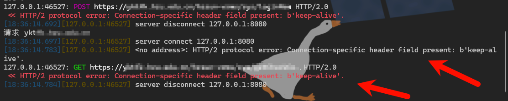

环境 先创建一个加解密的环境，这里我用python的flask搭建
1 2 3 4 5 6 7 8 9 10 11 12 13 14 15 16 17 18 19 20 21 22 23 24 25 26 27 28 29 30 31 32 33 34 35 36 37 38 39 40 41 42 43 44 45 46 47 48 49 50 51 52 53 54 55 56 57 58 59 60 61 62 63 64 65 66 67 68 69 70 71 72 73 74 75 76 77 78 79 80 81 82 83 84 85 from flask import Flask, request, jsonify, render_template_stringimport base64import jsonapp = Flask(__name__) @app.route('/' , methods=['GET' , 'POST' ] def index (): if request.method == 'POST' : if request.is_json: postData = request.get_json() print ("======================" ) print ("服务端最终接受到的请求:" ,json.dumps(postData,ensure_ascii=False )) if 'encodedData' in postData: encodedData = postData['encodedData' ] if encodedData.endswith('=' ): decodedData = base64.b64decode(encodedData).decode() decodedData = base64.b64encode(decodedData.encode()).decode() else : decodedData = base64.b64encode(encodedData.encode()).decode() response = {'reencodedData' : decodedData} print ("服务端最终返回的请求:" ,json.dumps(response,ensure_ascii=False )) return jsonify(response) else : errorResponse = {'error' : 'Invalid data received' } return jsonify(errorResponse), 400 else : return jsonify({'error' : 'Request must be in JSON format' }), 400 return render_template_string(''' <!DOCTYPE html> <html lang="en"> <head> <meta charset="UTF-8"> <meta name="viewport" content="width=device-width, initial-scale=1.0"> <title>Base64编码示例</title> </head> <body> <form id="myForm"> <label for="userInput">输入文本：</label> <input type="text" id="userInput" name="userInput" required> <button type="button" onclick="encodeAndSend()">提交</button> </form> <!-- 添加用于显示服务端返回的数据的元素 --> <div id="responseDataContainer"></div> <script> function encodeAndSend() { var userInput = document.getElementById("userInput").value; var encodedData = btoa(userInput); var jsonData = { encodedData: encodedData }; fetch('/', { method: 'POST', headers: { 'Content-Type': 'application/json' }, body: JSON.stringify(jsonData) }) .then(response => response.json()) .then(data => { var responseDataContainer = document.getElementById("responseDataContainer"); responseDataContainer.innerHTML = '服务端返回的数据： ' + JSON.stringify(data); }) .catch(error => { console.error('Error:', error); }); } </script> </body> </html> ''' )if __name__ == '__main__' : app.run(host="0.0.0.0" ,port="8081" ,debug=True )
运行，抓包如下：
MITM脚本 整体流程大概如此，需要运行两个MITM脚本，分别处理上游代理和下游代理
这里我设置
MITM下游代理为：127.0.0.1:7070
bp代理代理为：127.0.0.1:8080
MITM上游代理为：127.0.0.1:9090
下游代理脚本：MITM-downstream.py
1 2 3 4 5 6 7 8 9 10 11 12 13 14 15 16 17 18 19 20 21 22 23 24 25 26 27 28 29 30 31 32 33 34 35 36 37 38 39 40 41 42 43 44 45 46 47 48 49 50 51 52 53 54 55 56 57 from mitmproxy import flowfilter,ctxfrom mitmproxy.http import HTTPFlowfrom mitmproxy import flowfilterfrom mitmproxy.http import HTTPFlowimport base64import jsonimport timeclass Mimit (): TargetHost = ["192.168.1.1" ] def request (self,flow ): if flow.request.host in self.TargetHost: print ("======处理下游请求======" ) req_header = flow.request.headers ctx.log.info(req_header) req = flow.request.get_text() ctx.log.info(req) req_json = json.loads(req) req_json['new-down' ] = "下游请求" ctx.log.info(req_json) new_req_str = json.dumps(req_json,ensure_ascii=False ) ctx.log.info(new_req_str) flow.request.set_text(new_req_str) def response (self,flow ): if flow.response.host in self.TargetHost: print ("======处理下游响应======" ) rep_header = flow.response.headers ctx.log.info(rep_header) rep = flow.response.get_text() ctx.log.info(rep) rep_json = json.loads(rep) rep_json['new-down' ] = "下游响应" ctx.log.info(rep_json) new_rep_str = json.dumps(rep_json,ensure_ascii=False ) ctx.log.info(new_rep_str) flow.response.set_text(new_rep_str) addons = [Mimit(),]
执行命令：mitmdump -p 7070 -s MITM-downstream.py –mode upstream:http://127.0.0.1:8080 –ssl-insecure
然后bp中设置bp的上游代理：
上游代理脚本：MITM-upstream.py
1 2 3 4 5 6 7 8 9 10 11 12 13 14 15 16 17 18 19 20 21 22 23 24 25 26 27 28 29 30 31 32 33 34 35 36 37 38 39 40 41 42 43 44 45 46 47 48 49 50 51 52 53 54 55 56 57 from mitmproxy import flowfilter,ctxfrom mitmproxy.http import HTTPFlowfrom mitmproxy import flowfilterfrom mitmproxy.http import HTTPFlowimport base64import jsonclass Mimit (): TargetHost = ["192.168.1.1" ] def request (self,flow ): if flow.request.host in self.TargetHost: print ("======处理上游请求======" ) req_header = flow.request.headers ctx.log.info(req_header) req = flow.request.get_text() ctx.log.info(req) req_json = json.loads(req) req_json['new-up' ] = "上游请求" ctx.log.info(req_json) new_req_str = json.dumps(req_json,ensure_ascii=False ) ctx.log.info(new_req_str) flow.request.set_text(new_req_str) def response (self,flow ): if flow.response.host in self.TargetHost: print ("======处理上游响应======" ) rep_header = flow.response.headers ctx.log.info(rep_header) rep = flow.response.get_text() ctx.log.info(rep) rep_json = json.loads(rep) rep_json['new-up' ] = "上游响应" ctx.log.info(rep_json) new_rep_str = json.dumps(rep_json,ensure_ascii=False ) ctx.log.info(new_rep_str) flow.response.set_text(new_rep_str) addons = [Mimit(),]
执行命令：mitmdump -p 9090 -s MITM-upstream.py –ssl-insecure
最后的执行效果如下：
浏览器默认效果：
开启MITM加解密后：
而服务器接受的数据以及MITM两层代理中的数据为：
Bp中显示的效果如下：
假设有一个web系统，请求和响应全加密。借助这套MITM可以达到：
浏览器 - Burp： 下游代理 request() bp明文显示浏览器发送的加密过的请求
Burp - 服务器： 上游代理 request() bp修改后，重新加密发给服务器，以便服务器正常响应
服务器 - Burp： 上游代理 reponse() bp明文显示服务器返回的加密过的响应
Burp - 浏览器： 下游代理 reponse() 重新加密返回给浏览器，以便浏览器显示正常
再把流程图贴一下：
优化代码 优化一下代码，方便写加解密过程：
(留个坑)
记录碰到的一些问题 当配置下游代理后，mitm日志中报这种问题

解决方法，在mitm配置目录下的config.yaml文件中（如果没有就新增一个），将validate_inbound_headers改为false（默认为true）。
配置文件默认读取路径：~/.mitmproxy/config.yaml，见配置项：confdir: '~/.mitmproxy'
linux 系统，如/root/.mitmproxy/config.yaml，没有则需要新建config.yaml
windows 系统，如：C:\Users\Admin\.mitmproxy\config.yaml，用户名：Admin，没有则需要新建config.yaml
之后在启动mitm时，加上 –set confdir=’~/.mitmproxy’
比如： mitmdump -p 7070 -s tmp.py –mode upstream:http://127.0.0.1:8080 –ssl-insecure –set confdir=’~/.mitmproxy’
参考：https://github.com/mitmproxy/mitmproxy/issues/4836 https://docs.mitmproxy.org/stable/concepts-options/ https://www.cnblogs.com/yqbaowo/p/18175529
参考 Mitmproxy/mitmdump中文文档以及配置教程：https://www.cnblogs.com/yoyo1216/p/16165758.html
Mitmdump 和 Burp Suite整合详解：https://xz.aliyun.com/t/13218?time__1311=GqmxuD070%3Do05Rx%2BOrmwK0KqY5kWbD#toc-5